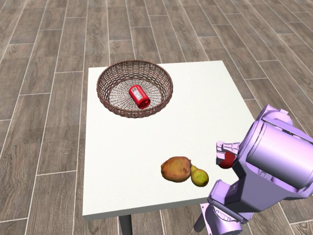

Piper 蒸馏
把教师的工具选择教给 4B 学生
在初始执行器 H₀ 上，我们想回答三个问题：学生从哪里起步，蒸馏带来多少收益，还有多少教师能力没有留下来？下图统一采用 TERM 修订稿的原生任务判据（N-SR），15 个任务各 30 场。
同一把尺子量三个模型
学生多完成了 117 场，增加 26.00 个百分点。相同场景与预算下，蒸馏后的学生距离教师仍差 161 场，即 35.78 个百分点。这里的教师强弱对比只使用环境的原生判定。稿件仅给教师总数，逐任务表保留两列学生实数。
| 任务 | Qwen Base | Qwen SFT |
|---|---|---|
| 抓起胡萝卜 | 0 | 3 |
| 番茄放到土豆旁 | 0 | 6 |
| 柠檬入箱 | 0 | 1 |
| 推锅 | 4 | 18 |
| 方块反向堆叠 | 0 | 1 |
| 苹果与果汁反向排序 | 23 | 19 |
| 箱子与托盘 | 0 | 0 |
| 摆桌 | 0 | 0 |
| 罐子入箱 | 0 | 14 |
| 苹果与果汁排序 | 0 | 17 |
| 托盘取方块 | 0 | 3 |
| 推篮 | 5 | 28 |
| 关闭抽屉 | 0 | 4 |
| 杯子游戏 | 1 | 14 |
| 红色物体入篮 | 0 | 22 |
七个示范来源任务合计从 6/210 到 102/210；其余八个任务从 27/240 到 48/240。新增的 117 次成功中，96 次落在来源任务。推篮、红色物体入篮进步明显，反向排序退了 4 场，摆桌和箱子与托盘仍是零。下一轮如果只能看三段失败录像，我会优先看这两个零分任务和反向排序，以分清技能缺失、目标理解和执行错误。
1,041 条记录，究竟监督了什么？
667 条基础轨迹和 374 条扰动恢复分支进入 Qwen3.5-4B 的语言模型 SFT，视觉编码器和视觉对齐层冻结，训练 3 个 epoch。基础轨迹从任务开始；恢复分支从父轨迹检查点注入扰动，继承可见历史。相同前缀会出现多次。能核到录像时间的 759 条合计 21.48 小时；按任务和轨迹类型为其余 282 条补估，总量约 28.9 小时仿真执行，分支只计新增片段。
我们检查过一个容易漏掉的错误：原始对话保存了工具调用，但加载器没有按预期读进监督字段。修正时保留 assistant 原始文本，把图像和真正送入损失函数的内容逐条对应。1,041 条里有 27 条带拒绝审核标签，也进入了这次训练。这使 checkpoint 的含义很具体：它反映这份导出集，不能用来估算清洗重训的收益。
这里更新的是开放学生的权重。闭源 GPT 在教师阶段接收观察、生成工具调用；一次带有机器人图像的 API 请求并不说明该服务更新了模型。公开的 PEAR 则展示了另一种监督来源：在仿真里用任务奖励训练输出末端动作的推理模型，详见近作一章。
三个失败怎么查到执行层
夹爪离物体还有多远？ 指身粗包围盒产生的四个接触点与原始 CAD 相距约 19–26 mm。换 CAD 凸包可以消掉这类假接触；杯壁靠近真实指尖时仍会发生接触。我们又在红物抓取里发现，路径换倾角后还在沿用旧姿态下的指尖偏移，下降时侧偏约 5.4 mm。动作文本即使正确，错误的坐标变换仍会随每次抓取重复。
果汁拿起来为什么会掉？ 原资产编译出来只有约 0.138 g。提高质量后，有的轨迹能到位却在抬升阶段滑脱。最终采集给容器加内容物设了 70–140 g 的仿真采样范围，每条分支继承父本质量。这是建模选择；实物称重才能检验它同真机的差距。
右边的杯子还是刚才那只吗？ 场景里移动一只杯子后，“最右”会换对象；两个位置描述也可能被分割器映射成近乎相同的掩码。记录已检查位置有助于避免重复，但每次重观察都花费动作预算。一段记录里 Base 用完 25 次调用仍留下方块，SFT 在第 14 次调用后将它抬起约 14.1 cm。这段录像解释了一条成功如何发生，整组结果仍以表中的 14/30 为准。
